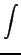

Assuming that your input data is sensible :
psi(1,1,1)
psi(2,1,1)
...
psi(nr1,1,1)
psi(1,2,1)
psi(2,2,1)
...
psi(nr1,2,1)
...
psi(nr1,nr2,1)
psi(1,1,nr3)
etc
Let ind be the position of the (i,j,k) element in the above list: the
relation between ind and (i,j,k) is:
ind = i + (j + 1) * nr1 + (k + 1) * nr2 * nr1
This should clarify the relation between 1D and 3D indexing. In real
space, the (i,j,k) point of the mesh is
(info by Stefano Baroni)
'''A:''' The total magnetization is the integral of the magnetization
in the cell:
"Lowdin charges (as well as other conventional atomic charges) do not
satisfy any sum rule. You can easily convince yourself that ths is the
case because the atomic orbitals that are used to calculate them are
arbitrary to some extent. If yu like, you can think that the missing
charge is "delocalized" or "bonding" charge, but this would be another
way of naming the conventional (to some extent) character of Lowdin
charge." (Stefano Baroni, Sept. 2008).
See also the definition of "spilling parameter": Sanchez-Portal et
al., Sol. State Commun. 95, 685 (1995). The spilling parameter
measures the ability of the basis provided by the pseudo-atomic wfc to
represent the PW eigenstates, by measuring how much of the subspace of
the Hamiltonian eigenstates falls outside the subspace spanned by the
atomic basis.
If you obtain the equilibrium cell from a variable-cell optimization,
do not forget that the pressure/stress calculated with the modified
kinetic energy functional (very useful for variable-cell calculations)
slightly differ from those calculated without it.
More often than not, this charges are a slightly too hard to be
expanded very accurately in plane waves, hence some aliasing error
will be introduced. Especially if the unit cell is big and mostly
empty, some local low negative charge density will be produced.
''This is NOT harmful at all, the negative charge density is handled
properly by the code and will disappear during the self-consistent
cycles'', but if it is very high (let's say more than 0.001*number of
electrons) it may be a symptom that your charge density cutoff is too
low. (L. Paulatto - November 2008)
 =
=
 =
=
8.6.0.4 ''What is the difference between total and absolute
magnetization?''
MT = (nup - ndown)d3r.
MA = | nup - ndown| d3r.
8.6.0.5 ''How can I calculate magnetic moments for each atom?''
'''A:''' There is no 'right' way of defining the local magnetic moment
around an atom in a multi-atom system. However an approximate way to define
it is via the projected density of states on the atomic orbitals (code
projwfc.x, see example08 for its use as a postprocessing tool). This
code generate many files with the density of states projected on each
atomic wavefunction of each atom and a BIG amount of data on the
standard output, the last few lines of which contain the decomposition
of Lowdin charges on angular momentum and spin component of each atom.
8.6.0.6 ''What is the order of Ylm
'''A:''' "The order is, I think:
1 $P_{0,0}(t)$
2 $P_{1,0}(t)$
3 $P_{1,1}(t)cos\phi$
4 $P_{1,1}(t)sin\phi$
5 $P_{2,0}(t)$
6 $P_{2,1}(t)cos\phi$
7 $P_{2,1}(t)sin\phi$
8 $P_{2,2}(t)cos2\phi$
9 $P_{2,2}(t)sin2\phi$
and so on; Pl, m
8.6.0.7 ''Why is the sum of partial Lowdin charges not equal to
the total charge?''
8.6.0.8 ''Why do I get a strange value of the Fermi energy?''
"The value of the Fermi energy (as well as of any energy, for that
matter) depends of the reference level. What you are referring to is
probably the "Fermi energy referred to the vacuum level" (i.e.
the work function). In order to obtain that, you need to know what the
vacuum level is, which cannot be said from a bulk calculation only"
(Stefano Baroni, Sept. 2008).
8.6.0.9 ''Why I don't get zero pressure/stress at equilibrium?''
It depends. If you make a calculation with fixed cell parameters, you
will never get exactly zero pressure/stress, unless you use the cell
that yields perfect equilibrium for your pseudopotentials, cutoffs,
k-points, etc.. Such cell will anyway be slightly different from the
experimental one. Note however that pressures/stresses in the order of
a few KBar correspond to very small differences in terms of lattice parameters.
8.6.0.10 ''Why do I get "negative starting charge"?''
Self-consistency requires an initial guess for the charge density in
order to bootstrap the iterative algorithm. This first guess is
usually built from a superposition of atomic charges, constructed from
pseudopotential data.
8.6.0.11 ''How do I calculate the work function?''
Work function = (average potential in the vacuum) - (Fermi
Energy). The former is estimated in a supercell with the slab
geometry, by looking at the average of the electrostatic potential
(typically without the XC part). See the example in
examples/WorkFct_example.


Next: 8.7 Phonons
Up: 8 Frequently Asked Questions
Previous: 8.5 Frequent errors during
Contents
Paolo Giannozzi
2009-07-19